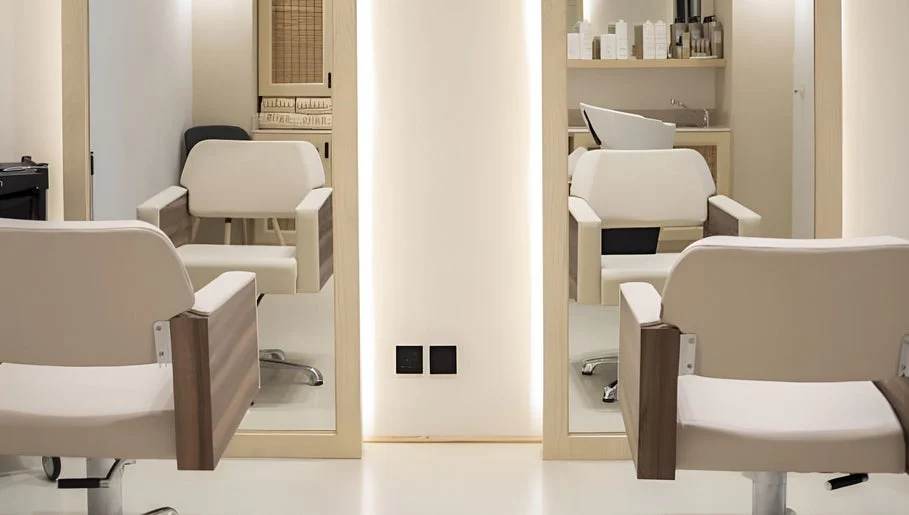

سلس
للراحة مساحة.
ولجمالك تفاصيل.
من الخلطات الطبيعية ومعالجات الشعر إلى الأظافر والتصفيف، تقدم قائمة سلس خيارات متعددة للعناية. استعرضي الخدمات المنشورة في فرع الفيصلية ثم تابعي اختيار الموعد على منصة الحجز.
تعرّف على الموقع